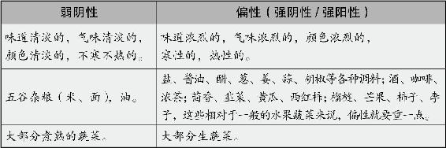

五谷杂粮多属弱阴性的食物，肥甘厚味是比较偏阴性的食物，相比于偏阴性的生蔬菜而言，煮熟的蔬菜是弱阴性的，所以健康饮食第一原则就要多吃主食和煮熟的蔬菜。
健康的饮食之道，就是把握饮食的阴阳平衡。怎么平衡呢？不是说今天你吃的这顿饭，有几种菜，它们互相之间平衡就可以了，而是指你吃下去的所有东西跟你的身体都要阴阳平衡。
为了达到这个平衡，要以阴性食物为主，阳性食物为辅。
为什么不是一半一半呢？因为相对于食物来说，人体为阳，阴性食物的分量当然要超过阳性食物才能与人体达到阴阳平衡。而阴阳食物之间的比例，就要根据个人体质来掌握了。
对于大部分人来说，要想保持身体的阴阳平衡，应该多吃弱阴性的东西，少吃太偏性的东西。
为什么我们要以米和面为主食？就是因为它们是弱阴性的，最容易与人体达成和谐。
为什么说养生最忌讳肥甘厚味？因为它们都是比较偏性的。越是营养丰盛、热量高的食物越偏阴性，油腻的、甜的饮食都属于强阴性食物，而麻辣辛香这些调料又属于强阳性食物。所以说饮食宜清淡，不宜味道太浓重。
哪些食物是弱阴性的呢
味道清淡的，气味清淡的，颜色清淡的，不寒不热的……具有这些比较平和性质的食物就是弱阴性的。五谷杂粮基本上都是弱阴性食物，大部分蔬菜生的时候比较偏阴性，煮熟以后就阴阳调和了。
哪些食物是偏性的呢
味道浓烈的，气味大的，颜色鲜艳的，寒性的，热性的……具有这些特殊性质的食物一般不是偏阴就是偏阳。盐、酱油、醋、葱、姜、蒜、胡椒等各种调料都是，酒、咖啡、浓茶也是。蔬菜中的茴香、韭菜、黄瓜、西红柿，水果中的榴梿、芒果、柿子、李子等，相对于一般的水果、蔬菜来说，偏性就要重一点。

弱阴性的食物是营养的根本，偏性的食物是营养的补充。人可以不吃偏性的食物，但没有弱阴性的食物就不会健康。所以，健康饮食的第一原则，就是一定要吃主食和蔬菜。